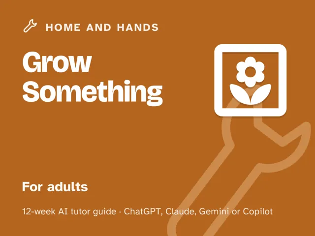

Grow Something
$29Instant download: a PDF to read, a browser copy, and the AI-tutor file you hand straight to any AI assistant.Buy it on Etsy →
Take the free placement check first: 15 minutes, and it names the week to start at.
Killed every plant you've ever owned? Most of them died from too much water or too little light, not from you. This 12-week plan turns an AI tutor into a patient garden coach at your side: you snap a photo of a sick or thriving plant, describe what you see (yellow leaves? drooping? spots?), and it asks questions until you both understand what the plant needs, then walks you through it in small, checked steps. It adapts to your climate and your space, whether that's a windowsill, a balcony rail, or a backyard. The guide is written in US English, and every prompt tells the AI to use your country or region for units, spelling, and examples. No experience needed, and by week 11 you'll aim to bring in a first harvest, even if it's one herb sprig.
What you get
This is a digital guide: a deep, ready-to-run program, not a light PDF checklist. You lead one fully-scripted ~60-minute session each week, with every step timed and written out for you. No gardening or AI expertise needed going in. - 12 weekly sessions, each built the same deep way: a plain-language concept, a concrete worked example, a minute-by-minute session plan for the ~60 minutes with the AI-tutor prompts built in, a "show me" checkpoint, common mistakes to avoid, and practice. - "Never used an AI chat assistant? Start here": a five-minute onboarding in the front matter that gets a complete beginner from zero to ready using any free AI assistant. No paid plan needed. - Four rescue prompts in the front matter for when you're stuck, discouraged, or a session goes sideways, usable anytime, not just in the week they're introduced. - An AI-tutor prompt set throughout: a diagnose-first Socratic starter, a "level me up" prompt, and a safety guardrail on labels and edibility.
The 12 weeks
- Read Your Light and Space
- Soil Is Everything: The Basics
- Easy Wins First: Herbs You Can't Kill
- Watering Right: The Number One Killer
- Seeds vs Starts and How to Plant
- Feeding Without Overdoing It
- Diagnosing Pests and Disease From a Photo
- Containers vs Beds and Small-Space Growing
- Seasons, Timing, and What to Plant When
- Project Week I: Plan and Plant
- Project Week II: Tend, Troubleshoot, Harvest
- Demo Day and Planning Next Season
Who it's for
Adults who have killed every plant they've owned and want to grow herbs, vegetables, or houseplants successfully. No experience assumed. If you have a sunny-ish spot and a phone, you're ready. Works for a windowsill, a balcony, or a backyard.
Why this instead of a free chatbot
A raw chatbot will confidently guess at your plant without ever asking about your light, your climate, or your space, and will happily tell you a berry is edible from a blurry photo. This pack ships the structure and guardrails it lacks: a diagnose-first method that starts with your real conditions, a true 12-week progression from first herb to first harvest, and a tutor set up to read labels with you and route you to your local extension service instead of guessing. Competence with a safety net, not confident guessing that kills another plant.
Safety
This is educational content, not professional advice. Handle tools carefully and read and follow every fertilizer and pesticide label: wear gloves, eye protection, and a mask when a label calls for it. Never eat any plant, berry, leaf, or mushroom you haven't positively identified as safe. Open potting mix away from your face and wash your hands after handling it, secure any container grown on a balcony or rail so it can't fall, and keep toxic plants and garden products away from children and pets. Watch sun and heat exposure, hydrate, and mind your allergens. For regional advice on climate, pests, and what's safe to grow and eat, consult your local cooperative extension service or its local equivalent.
FAQ
- Do I need any experience? None, with gardening or with AI. Each week is one fully-scripted ~60-minute session: every step timed and written out for you. Week 1 is just reading the light in one spot; week 3 gets a hard-to-kill herb growing. Every step is small and checked.
- Which AI does it use? Any modern AI chat assistant with photo input: ChatGPT, Claude, Copilot, or Gemini. Free versions are enough; no paid plan needed. Never used one before? The guide's first section walks complete beginners through setup in about five minutes.
- Is this safe? Who's liable? It's educational only. It teaches you to read and follow every fertilizer and pesticide label, wear protection, and (importantly) to never eat any plant, berry, or mushroom you haven't positively identified as safe, checking with your local extension service. You assume the usual gardening risk; the pack and tutor are not a substitute for a label or a professional.
- No yard? Just a windowsill? Perfect. The whole pack works for a sill, balcony, or bed, and the container weeks are built for small spaces.
- Refunds? Standard marketplace refund policy applies.
$29Instant download: a PDF to read, a browser copy, and the AI-tutor file you hand straight to any AI assistant.Buy it on Etsy →